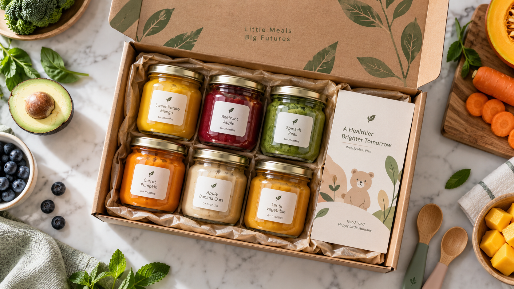
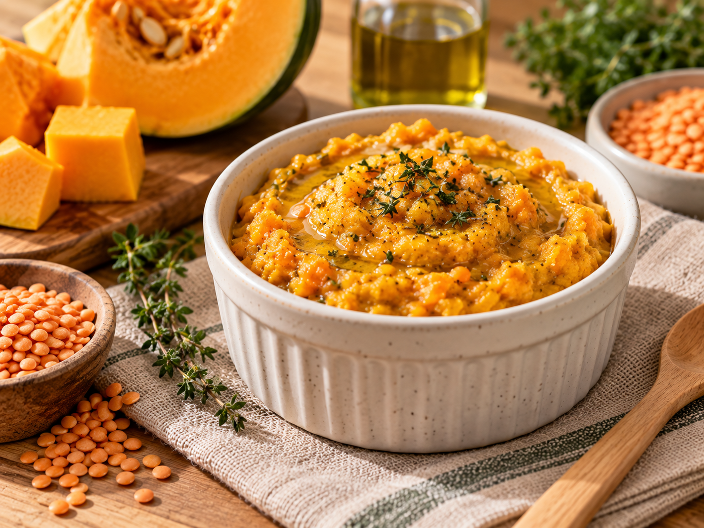
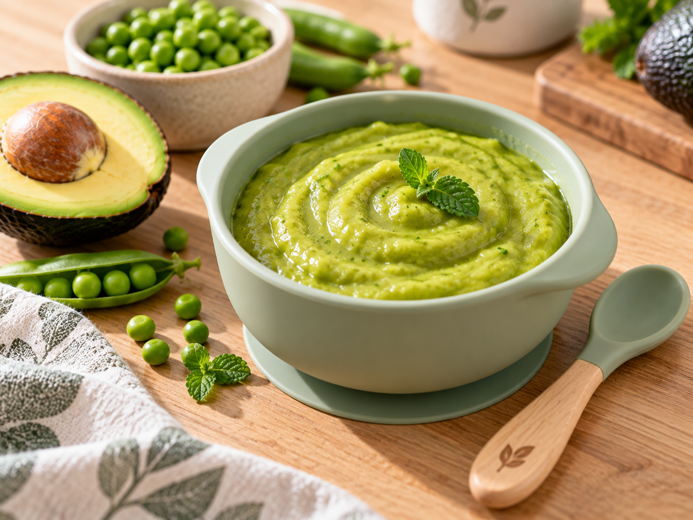
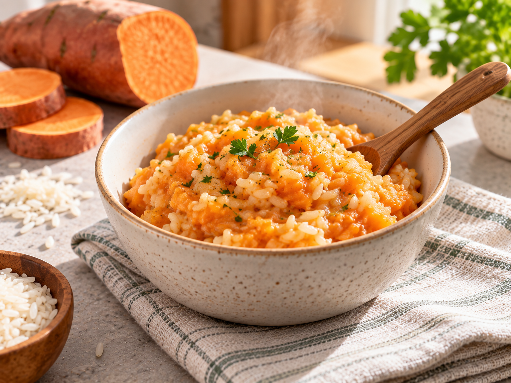
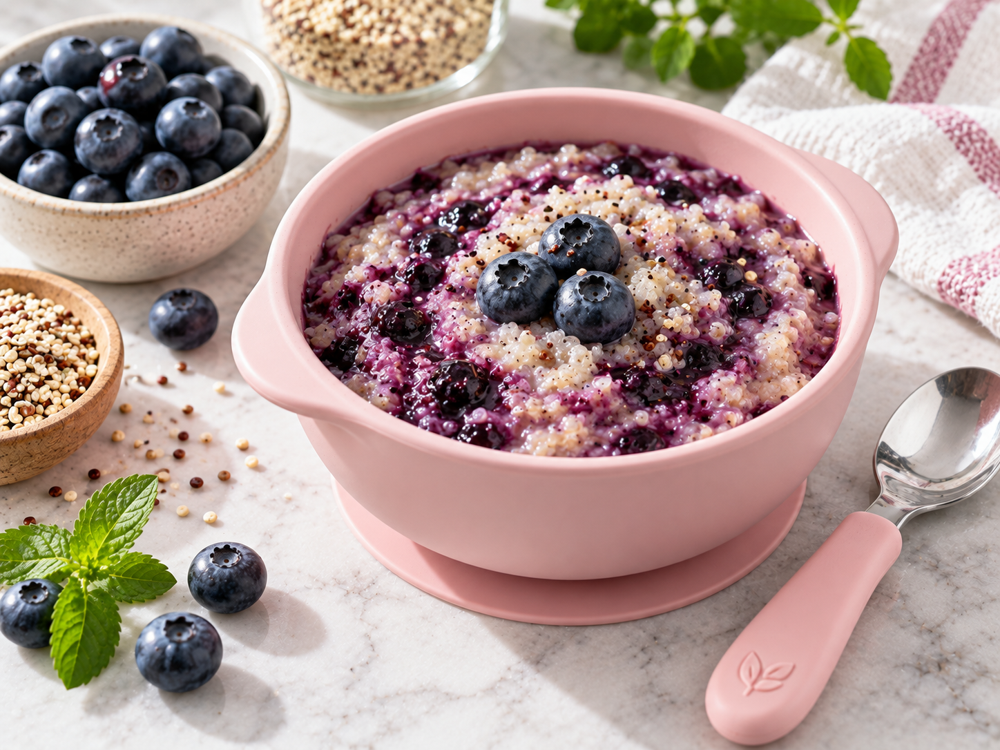
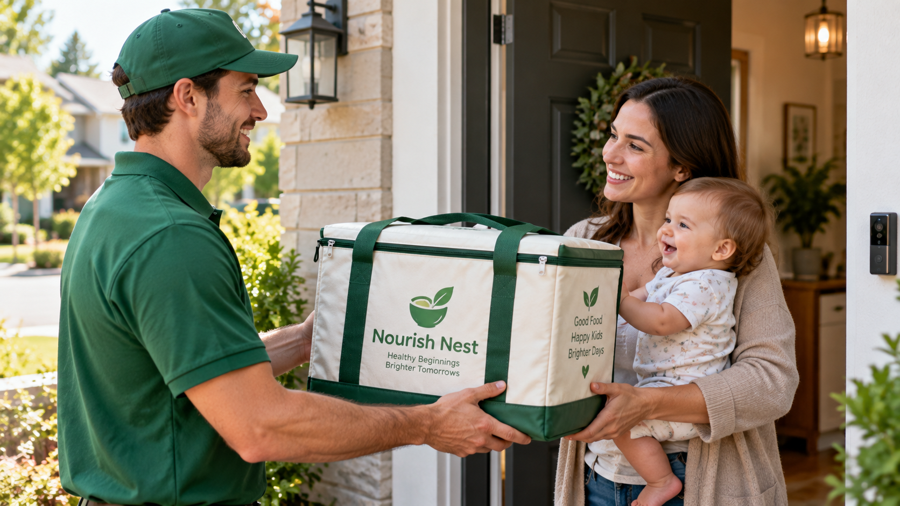

Discover a gentler, stress-free way to feed your growing child with pediatrician-crafted organic meals delivered fresh to your door every week.

We hold every recipe to the highest standard of nutrition and flavor.
Sourced from clean farms prioritizing fresh seasonal harvests.
Preserves vibrant natural flavor, essential vitamins, and soft texture.
No preservatives, artificial colors, or unnecessary fillers ever.
Explore a sample of our 20+ seasonal dishes, steam-cooked in small batches and portioned to your child's developmental milestone.

Smooth puree of organic pumpkin, golden lentils & cold-pressed olive oil.

Silky blend of ripe avocado, garden green peas and subtle hint of mint.

Soft textured mash of organic sweet potato, brown rice & gentle herbs.

Antioxidant-rich blueberry and strawberry coulis over fluffy quinoa.
Every milestone requires the right texture balance, key nutrient density, and palate training. Explore how our chef-designed recipes evolve alongside your child's growth.
"During 4–6 months, the focus is gentle introduction to natural single flavors without sodium or added sugars. Soft steam purées assist the smooth transition from liquid milk feeds."
We deliver organic meals in temperature-controlled, 100% curbside recyclable packaging. No shelf-stable heat processing, no chemical preservatives—just farm-fresh goodness chilled for safe infant feeding.
Natural plant-fiber insulation maintains sub-4°C chill through transit.
Recycle the entire box, denim liners, and paper tapes curbside.
Food-grade glass and compostable plant bowls with zero microplastics.
Warm gently in microwave or warm water bath—zero prep, zero dishes.

We understand that allergy management and ingredient safety come first. Every single jar clearly states exact ingredients and potential allergens, backed by our commercial kitchen HEPA air-filtration and certified sanitization protocols.
Our intuitive portal gives busy parents full control over weekly menus, allergen exclusions, and delivery schedules from any device.
Toggle exclusions for dairy, peanuts, tree nuts, eggs, soy, wheat, fish, and shellfish. The system instantly filters and locks your menu.
✓ Zero Cross-ContactGoing on vacation or grandparents visiting? Skip upcoming deliveries or pause your subscription anytime with zero fees or penalties.
✓ Complete AutonomySwap individual breakfast, lunch, or dinner recipes each week before the cutoff to match your child’s evolving palate and favorite flavors.
✓ 20+ Rotating RecipesReceive pediatrician-backed recommendations when your child reaches the next developmental milestone and is ready for textured mashes.
✓ 4 Milestone StagesDiscover why pediatricians recommend fresh low-temperature meals over high-heat pantry pouches and shelf-stable jars for optimal infant development.
Gently steam-cooked under 85°C • Chilled to 3°C • Delivered weekly fresh
Gentle low-heat steaming protects delicate Vitamin C, Folate, and natural digestive enzymes from thermal degradation.
100% authentic vegetable and herb profiles with zero sweet apple-sauce masking, actively preventing future toddler pickiness.
Calibrated fork-mashes and tender finger pieces encourage natural tongue lateralization, jaw movement, and swallowing confidence.
Refrigerated and consumed within 7 days. Never treated with synthetic citric acid or artificial shelf-extending concentrates.
Screened by third-party ISO labs to ensure heavy metal levels (lead, arsenic, cadmium) remain well below strict pediatric thresholds.
High-heat retort autoclaves • 18–24 month pantry shelf life • Factory bulk
Processed at extreme heat (>120°C) to kill bacteria for ambient storage, destroying up to 70% of heat-sensitive vitamins and phytonutrients.
Vegetable recipes are heavily diluted with cheap apple or pear puree, conditioning early taste buds to crave high sweetness.
Homogenized liquid slurry sucked through spouts bypasses chewing reflexes, which pediatric speech therapists caution can delay motor speech skills.
Citric acid or ascorbic acid additives are legally required to depress pH below 4.5 for room-temperature storage, which can cause infant reflux.
Industrial scale sourcing frequently meets only standard commodity thresholds rather than proactive Clean Label Project infant standards.
From choosing your weekly capacity to chilled delivery and effortless heating, nourishing your little one is as easy as 1-2-3-4.
See how our stage-tailored organic meal delivery transforms table times and saves busy parents hours every week.
"The sensory texture progression on Home 2 makes total sense! My 8-month-old transitioned from Stage 1 smooth purées to Stage 2 velvet mashes effortlessly."
"As a busy working dad, having freshly steamed organic meals delivered chilled every Thursday has saved our family dinner routine completely."
"The transparency around heavy metal lab testing and 100% organic sourcing gave me complete peace of mind when starting solid foods."